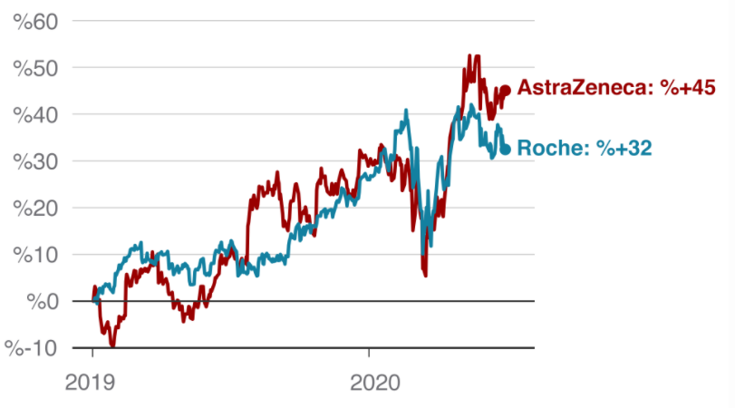

Article About "How does coronavirus affect economy?
---------------------------------------------------
What is Covid-19?
Coronavirus disease (COVID-19) is an infectious disease caused by a newly discovered coronavirus.
Most people infected with the COVID-19 virus will experience mild to moderate respiratory illness and recover without requiring special treatment. Older people, and those with underlying medical problems like cardiovascular disease, diabetes, chronic respiratory disease, and cancer are more likely to develop serious illness.
The best way to prevent and slow down transmission is to be well informed about the COVID-19 virus, the disease it causes and how it spreads. Protect yourself and others from infection by washing your hands or using an alcohol based rub frequently and not touching your face.
The COVID-19 virus spreads primarily through droplets of saliva or discharge from the nose when an infected person coughs or sneezes, so it’s important that you also practice respiratory etiquette (for example, by coughing into a flexed elbow).
Economic decline in the stock market:
There were big drops in the stock markets where the stocks of the companies were bought and sold.
This situation affected retirement funds and personal saving accounts too.
When number of cases are increasing (Covid-19), London FTSE Stock Market are large falling in New York Wall Street Dow Jones index and
Japan Nikkei index. In first quarter of 2020, Dow and FTSE, after first quarter of 1987 had seen biggest fall ever.
To answer this, in many countries it reduce finance charge and it promote consumer expenditures. For revive the economy,
Central Banks reduced interest rates. Because interference of goverment, after that day, global marketplaces had
many economic recoveries but some specialists are still worrying about second part of epidemy.
Vaccine Hope:
----------------------------------------------------------------
Many countries are spending billion of dolars to pharmaceutical companies.
Pharmaceutical companies are working on Covid-19 vaccine to countries return to "Normal".
But they are racing because they want to be first who found Covid-19 vaccine (Pharmaceutical Companies).
Rise Of Pharmaceutical Companies:
Rise Of Value of Stock Certificates

This situation caused in many pharmaceutical companies had record (very big) rises in Stock Certificates.
AstraZeneca (one of pharmaceutical companies) said that they have 2 billion dose of Covid-19 vaccine
production capacity.
References: